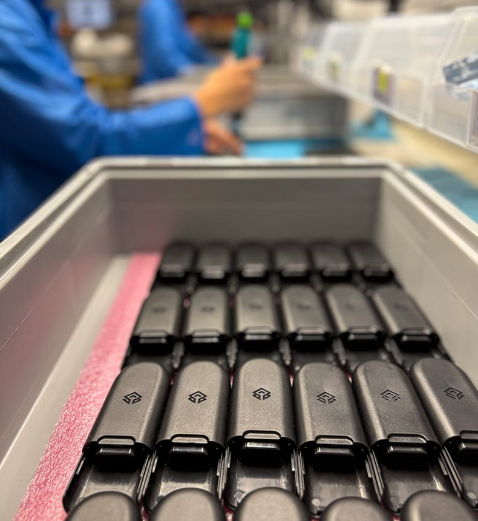
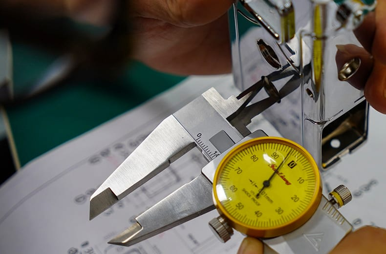
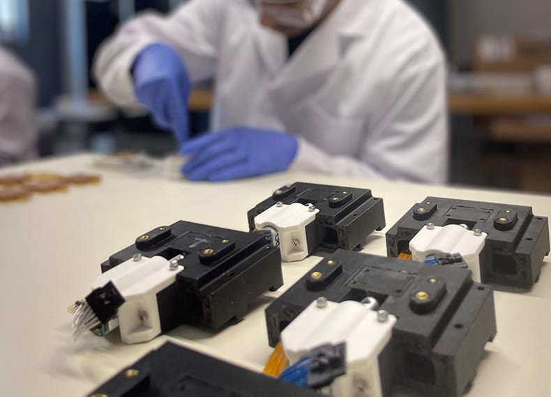
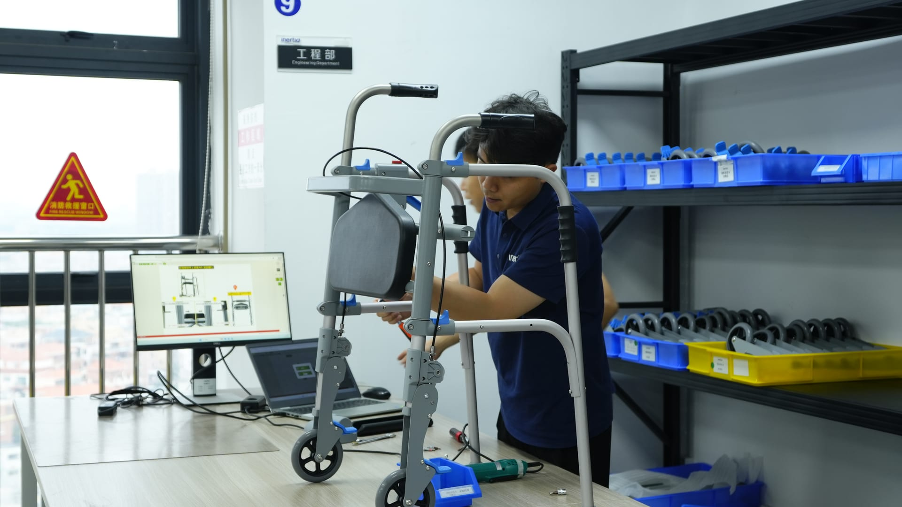
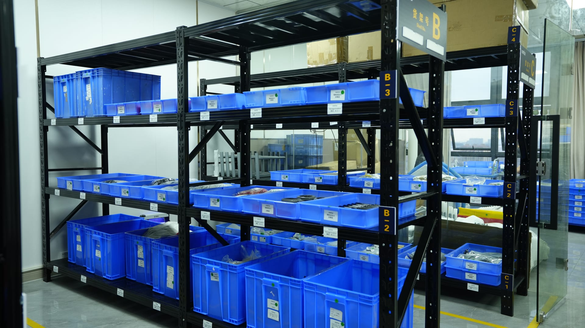
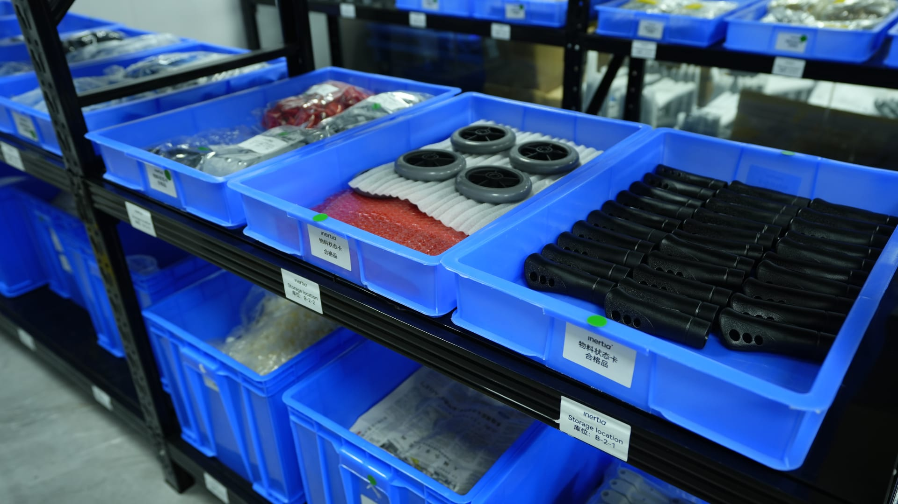
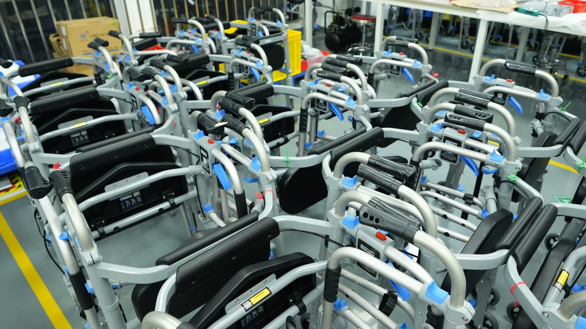

A New Day to Redefine the World Together
Learn more about our daily work and who we are
During the COVID-19 outbreak, we needed a company to partner with us to develop a new medical device in record time. Inertia was an incredible partner. They courageously took on the challenge and we successfully completed the project. Together, we directly improved the lives of patients around the world.
Product Manufacturing forScalable Hardware
Production
Where decisions come together as a system under real production conditions.
This stage is not about proving a design can work. That question has already been answered. The work now is ensuring it works the same way every time under real conditions with real operators, suppliers, and constraints. Manufacturing also tests the supply chain as a system: lead times, quality, logistics, and substitutions.
- Costs are no longer estimates.
- Processes are no longer flexible.
- Small inconsistencies start to matter a lot.
Some teams enter manufacturing confident the design is settled. Others know there are still open questions. In both cases, manufacturing changes how those questions get answered. Design intent, verification expectations, supply reliability, and unit cost are no longer separate conversations. They surface together, and they surface fast. At Inertia, product manufacturing is where decisions are tested by the reality of production and governed through a deliberate product manufacturing strategy.


Where execution is tested
Once product manufacturing begins, progress is no longer measured by plans, CAD, or early builds. It is measured by whether production can run without constant engineering intervention, and whether intern service contact with the factory floor.
This is where gaps tend to appear:
- Between what is documented and what actually happens on the floor.
- Between how operators were trained and how work is really performed.
- Between expected yields and what the process can sustain.
- Between supply assumptions and supplier behavior at volume.
- Between quality systems on paper and how they function day to day.
Manufacturing doesn't create these issues.
It's where they become visible, and expensive.
Is Inertia's Product Manufacturing program right for your team?
Teams typically recognize the need for product manufacturing support when production begins to expose realities that planning and early builds could not.
- Responsibility is shifting from engineering into operationsAnd ownership gaps are starting to appear.
- Early production or pilot builds are approachingWith limited room to absorb surprises.
- Yields, costs, or variability are not yet predictableMaking unit economics fragile and planning unreliable.
- Regulatory or quality audits are becoming realAnd documentation, traceability, and process discipline are being tested.
- Supply chain decisions are starting to lock inReducing flexibility just as constraints surface.
- Engineering support is still required to keep builds movingSignaling that the system is not yet stable.
- Production data exists, but insight does notSo issues repeat faster than they are resolved.
This is the phase where production either stabilizes or risk multiplies with every unit built.

Accumulating Manufacturing Debt
As product manufacturing begins, work multiplies quickly. More teams engage, more decisions run in parallel, and timelines begin to compress. At this stage, failure is no longer about feasibility. It is about maintaining control, stability, and economic viability as production scales.
Common failure patterns when manufacturing accelerates without control:
× Design intent erodes during transfer.
Critical assumptions survive in people's heads instead of processes, fixtures, and work instructions, forcing production to compensate informally.
× Production depends on constant engineering support.
Early builds succeed through heroics. As volume increases, stability collapses and throughput stalls.
× Unit economics don't survive scale.
Yields, tolerances, and cycle times look acceptable in first builds, then fail under sustained production.
× Quality systems exist on paper, not on the floor.
Controls are specified but not operationalized, creating audit risk and late corrective action.
× Supply chains solve today's problem, not continuity.
Initial sourcing works, but resilience, alternates, and long-term availability are deferred until change becomes slow, expensive, and politically difficult.

Warehousing & Logistics
A mature warehousing management system ensuring efficient material flow and precise traceability from inbound to outbound.

Parts Warehouse
Categorized, coded, and position-tracked storage — every material is retrievable in seconds, supporting efficient production scheduling.

Parts Storage System
Standardized shelving with batch labeling — full traceability from inbound receiving to line-side delivery, meeting ISO 13485 audit requirements.

Finished Goods Storage
Dedicated zones with climate control — every unit receives final inspection before shipment, ensuring products reach customers in optimal condition.